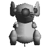
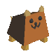
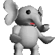
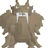

どうぶつ紹介
・くま
平均的な能力を持っている。問題は、旋回速度と移動速度のなさである。 まだにんげんだった子供の頃、「くま太郎」というあだ名を付けられていた。 まだにんげんだった子供の頃、「くま太郎」というあだ名を付けられていた。 |
・ねずみ
|  | 移動速度が速く使いやすいが、打撃攻撃、防御力が低い。元泥棒。自分の罪を悔いてはいない。 |
・ろぼ
| 移動速度が非常に遅いが、ダッシュ時の速度は8キャラ中最速。防御も高く、中々倒れない。ムツ・ゴルフの護衛ロボット。非常に知能が発達している。 |
・いぬ
|  | 能力が低いので嫌われるが、身長が低いので弾が当たり難い。「実はダンボールに包まっているだけではないか」との噂がある。 |
・ぺんぎん
| 旋回速度が速いので、使いやすいように思われるが、照準が合わせ難いので難しい。趣味はバレエ |
・ぞう
|  | HP、スタミナ、攻撃、防御が８キャラ中最高値だが、移動速度、旋回速度が遅く、回り込まれたら敗北を免れない。にんげんの頃から自分を「ぞう」だと思い込んでいた。 |
・りゅう
|  | 全体的な能力が高いが、使用するプレイヤーが多いと、ゲームの速度が下がる。森の精霊なのでどうぶつではない。 |
・あらいぐま
| 耐久力が無いが、移動系に関してはトップクラス。身長も低く、弾が当たり難い。にんげんの時の名前は「新井・スケ」 |